6 Modeling the Stages in A/D and D/A Processes
This section discusses mathematical models that are used to conveniently represent in a high-level, the individual signal processing stages in the A/D and D/A processes.
Different electronic circuits can be used when designing an ADC chip to perform the A/D process such as successive approximation and sigma-delta. If needed, the signal processing stages used in each of these techniques can be modeled with details. For instance, a detailed description may be necessary in case the goal is to optimize the electronic circuits to be more robust to impairments and noise. In the scope of this text, these details are not important and the A/D process is considered ideal. A similar approach is adopted for the D/A process.
1.6.1 Modeling the sampling stage in A/D
The goal here is to extract samples to represent an analog signal . In periodic (or uniform) sampling of a continuous-time function with a sampling interval , the sampling frequency is
|
|
(1.11) |
For example, digital telephony adopts Hz, which corresponds to s.
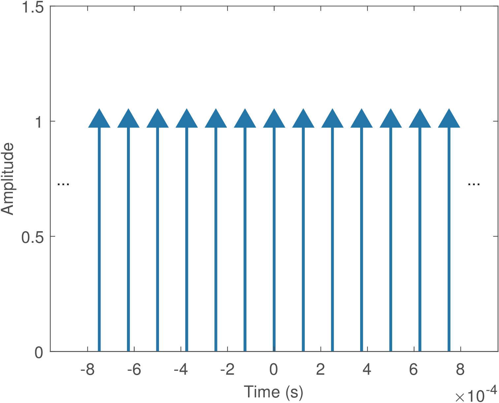
In the A/D context, periodic sampling can be modeled as the multiplication of by a periodic impulse train . Figure 1.14 depicts the infinite duration impulse train for sampling at 8 kHz. As conventionally done, the impulses heights indicate their areas. The sampled signal is denoted as
where is the impulse area in , which coincides with the amplitude of at . The amplitude of is not defined when and zero otherwise. The notation will sometimes be used to emphasize we mean the area of the impulse at time .
Example 1.11. Example of periodic sampling. Consider sampling the analog signal in Figure 1.1 via multiplying it by the train of impulses in Figure 1.14. Using the impulse sifting property (see Section B.26.5.0) leads to the sampled signal in Figure 1.13, which is depicted with the original analog signal superimposed.
In this case, the signal segment in Figure 1.1 has ms of duration. Given that kHz, this segment is represented by samples. To understand how is calculated in this case, observe that starts and ends with samples, such that it contains intervals of duration with a total duration ms.
An alternative representation would be to assume that there are intervals of duration , such that would end after an interval of seconds after its last impulse. One can find both representations in the literature and associated software.
Figure 1.13 shows that, in this case, the sampled signal represents very well the original analog signal , in the sense that the envelope of the impulse areas correspond to a good match with respect to the original signal. This is not the case in the following example. Consider now that the sampling interval is increased by a factor of 4 to s. Figure 1.15 indicates that in this case cannot represent well, for example, the variation between the samples indicated in the figure.
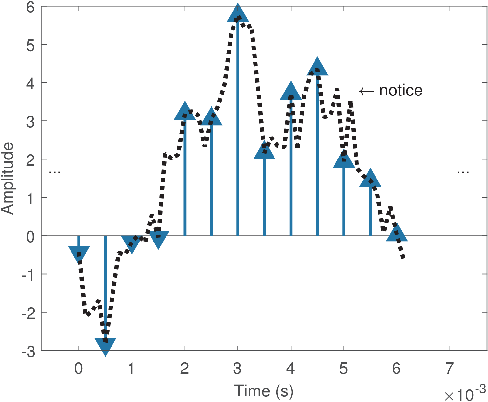
In terms of computational cost, it is often convenient to use the smallest possible value of . But choosing too small may lead to a sampled signal that does not represent well the original signal as noted in Figure 1.15. Section 1.6.10 discusses a theorem that informs the minimum sampling rate for perfect reconstruction of a signal from its samples given the maximum frequency of .
1.6.2 Oversampling
When the sampling rate is larger than the minimum required sampling rate, the signal is considered to be oversampled. Oversampling an analog signal may facilitate the consequent digital signal processing, especially when real-time is not a requirement. For instance, consider that a signal could be sampled with 8 kHz, but kHz is adopted. If real-time processing is required, instead of processing 8,000 samples per second, now the system must process 32,000. In this case, the oversampling factor would be . Oversampling by a factor of , can also be interpreted as decreasing the sampling interval by . For the given example, the interval s between neighbor samples is reduced to s.
In spite of the potential increase in computational cost of oversampling, it may be the case that higher accuracy can be obtained or eventually simpler algorithms adopted. It is very common to observe commercial DSP systems adopting or larger.
When simulating DSP in computers, a very large can be adopted to generate graphs of oversampled discrete-time signals that look like continuous-time signals.
Example 1.12. Mimicking continuous-time using discrete-time signals with a large oversampling factor. When representing a signal via a vector, one is implicitly dealing with a discrete-time signal. But even if a signal is representing the samples
of an analog signal , sometimes it is desirable to generate graphs that resemble . In such situations, one alternative is to use a large oversampling factor, as previously used in Listing 1.4. Listing 1.7 provides another example.Fs=8000; %sampling frequency (Hz) Ts=1/Fs; %sampling interval (seconds) f0=2400; %cosine frequency (Hz) N=40; %number of desired samples 5n=0:N-1; %generate discrete-time abscissa t=n*Ts; %discretized continuous-time axis (sec.) x=6*cos(2*pi*f0*t); %amplitude=6 V and frequency = f0 Hz subplot(211), plot(t,x); %plot discrete-time signal %% Create an oversampled version of signal x 10oversampling_factor = 200; oversampled_Ts = Ts/oversampling_factor; oversampled_n = n(1)*oversampling_factor:n(end)*oversampling_factor; oversampled_t=oversampled_n*oversampled_Ts;%oversampled discrete-time xo=6*cos(2*pi*f0*oversampled_t); %oversampled discrete-time signal 15subplot(212), plot(oversampled_t,xo);
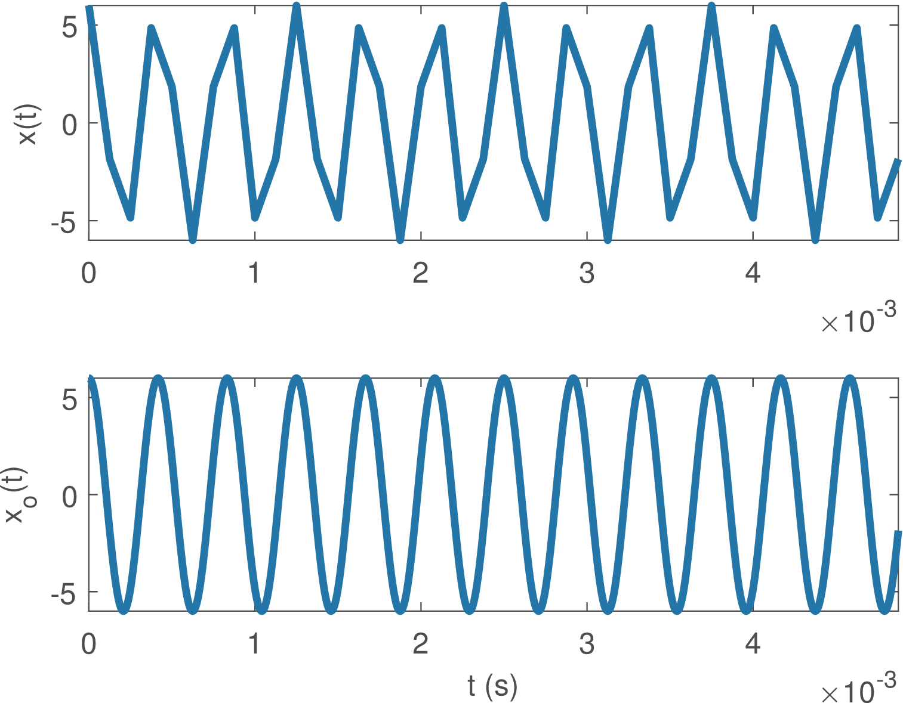
Listing 1.7 generates x with a sampling interval s. It also creates an oversampled version xo using a new sampling interval of ns. Instead of using stem in Matlab/Octave, both graphs were generated with plot, assuming the goal is to depict a continuous-time signal. However, as can be seen in Figure 1.16, xo corresponds to a coarse representation of a cosine that uses samples (length of x), while xo is a much better one using samples.
There are several ways to create versions with different sample rates from a given signal . In the specific case of Listing 1.7, the signals x and xo were created such that their first and last samples correspond to the same time instant, and ms, respectively. In this case, the number of samples in the oversampled xo is given by
|
|
(1.12) |
where is the number of samples in x and is the oversampling factor. This equation can be understood by considering that xo has all samples of x plus the extra samples between each of the consecutive pairs of samples of x. This leads to , which can be rewritten as Eq. (1.12).
When Eq. (1.12) is used for the signals in Listing 1.7, it leads to samples, as can be confirmed by the command length(x).
1.6.3 Mathematically modeling the whole A/D process
According to the convention adopted in this text, the following four signals appear during the A/D process along the stages of sampling (SAMPLING) and quantization (QUANTIZATION): analog, sampled, discrete-time and digital. Therefore, the A/D process is conveniently represented via the block diagram in Figure 1.17.
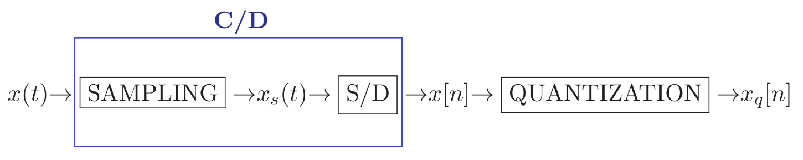
Figure 1.17 indicates that the sampled signals is converted into the discrete-time signal via the sampled to discrete-time (S/D) conversion. The sampling and S/D stages can be combined into the continuous to discrete-time (C/D) conversion. We first discuss the S/D conversion and then the C/D.
1.6.4 Sampled to discrete-time (S/D) conversion
The S/D conversion represents an intermediate stage in the periodic sampling process and is always associated to a given sampling interval . The actual signal processing performed by the electronic circuits of an ADC do not generate impulses or sampled signals, but the S/D conversion is a convenient mathematical model for the ideal periodic sampling. For example, if , the S/D conversion outputs .
Recall that exists for all values of while is a discrete time signal with . Another mathematical detail is that the non-zero amplitudes of are , but the corresponding areas lead to the amplitudes of the corresponding and are well-defined. For instance, and leads to the parcel in discrete-time.
Example 1.13. Example of S/D conversion. Figure 1.18 illustrates an example of S/D conversion assuming s.
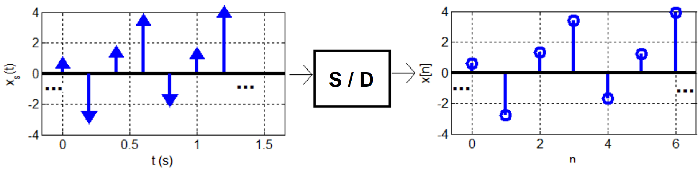
The visible samples of the input are . Their corresponding output values are .
1.6.5 Continuous-time to discrete-time (C/D) conversion
It is sometimes convenient to group the sampling and S/D stages into a single operation called continuous to discrete-time (C/D) conversion:
The only distinction between C/D and A/D conversions is that the former does not incorporate the quantization stage, as indicated in Figure 1.17.
1.6.6 Discrete-time to sampled (D/S) conversion
The discrete-time to sampled (D/S) conversion is basically the inverse of S/D. Figure 1.19 illustrates this, by depicting the inverse of the operation in Figure 1.18 of Example 1.13.
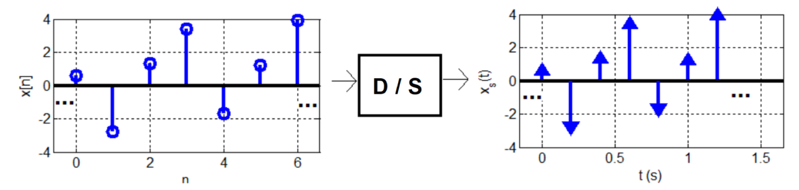
In Figure 1.19, the visible samples of the input are . Giventhat seconds, the corresponding output of the D/S conversion is .
While the S/D is a stage of the A/D process model, the D/S is part of the D/A.
1.6.7 Reconstruction
In the context of A/D and D/A processes, the sampling inverse operation is called reconstruction, and converts a sampled signal into an analog signal . Reconstruction is also called interpolation or filtering. It consists of choosing a function that is combined with as follows:
|
|
(1.13) |
where is the area of the impulse in at time .
The complete mathematical description of reconstruction will be discussed only in Section 3.5, after the concepts of convolution and filtering are presented.7
Because is obtained from via a D/S process, it is convenient to rewrite Eq. (1.13) observing that the impulse area coincides with its corresponding amplitude ,
such that:|
|
(1.14) |
Eq. (1.14) indicates that is obtained by shifting by , scaling this intermediate result by the corresponding amplitude , and then summing up all these parcels.
Among many alternatives for choosing the reconstruction function , two important ones are the so-called zero-order holder (ZOH) and sinc reconstruction . ZOH is useful for its simplicity, while sincs achieve a perfect reconstruction. They are discussed in the next paragraphs.
Reconstruction with zero-order holder (ZOH)
The ZOH consists of choosing with amplitude 1 from to . This can be written as (see Section 1.3.6). ZOH reconstruction sustains the amplitude of a given sample (which coincides with the area of its corresponding impulse in ) during an interval of seconds until the new sample updates this amplitude and so on.
Example 1.14. Example of ZOH reconstrucion. Eq. (1.14)
implemented with ZOH is illustrated in Figure 1.20 for the signal in Example 1.13. In this case, s and, therefore, .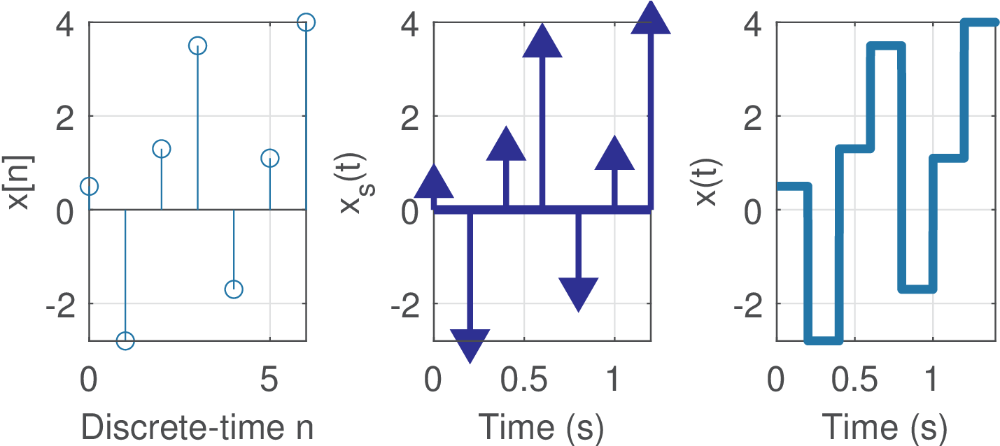
For instance, assuming in Figure 1.20, the area of the impulse in is 0.5 such that in the interval . Then, in the interval the amplitude of is , which is the area of the impulse at . And this “holding” process continues for other samples.
Reconstruction with sincs
Reconstruction with sincs consists of choosing (see Figure 1.8). It is the ideal reconstruction, as will be discussed along with the sampling theorem when presenting Eq. (3.19).
Example 1.15. Perfect reconstruction with sinc functions. Figure 1.21 provides an example of Eq. (1.14) using sinc functions. In this case, s and, therefore, .
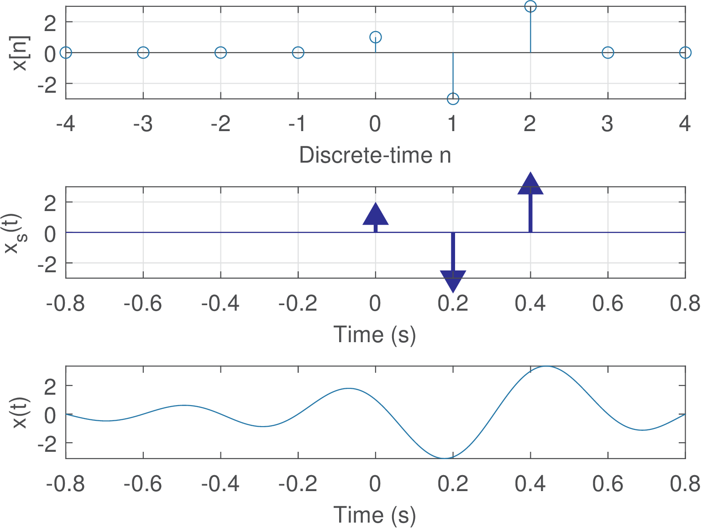
The resulting signal has an infinite support, extending from to (Figure 1.21 depicts only the range ). It can be also noted that even having quantized amplitudes, the reconstruction process creates an analog signal for which the amplitudes assume an infinite number of different values.
Figure 1.22 provides more details about the bottom plot in Figure 1.21. Assuming was obtained by sampling a continuous-time signal with the sampling theorem satisfied, this D/C conversion exactly recovers the original signal .
In this case, the canonical is contracted to , which has zeros at . Still as indicated in Eq. (1.14), the amplitude at discrete-time multiplies the corresponding contracted and time-shifted to create a parcel that is represented by a specific color and dashed line in Figure 1.22.
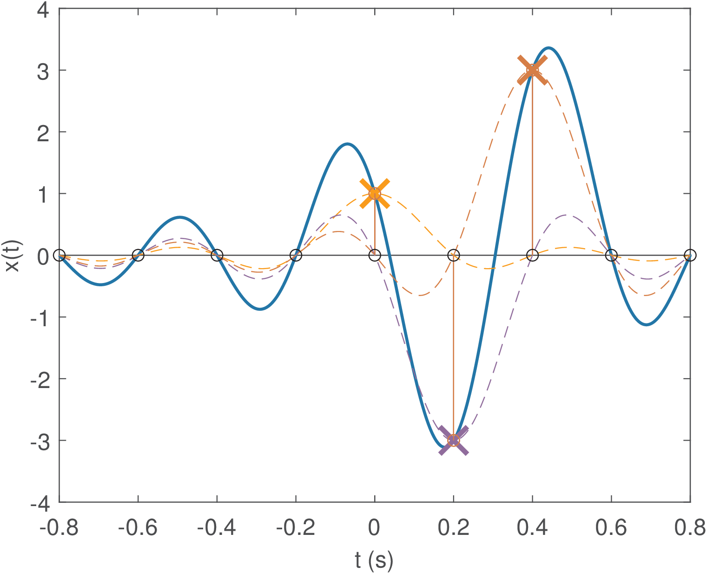
In this example, the first sinc in Figure 1.22 is centered at (corresponding to ). The second and third sincs are and , respectively. The summation of these three parcels according to Eq. (1.14), results in the analog signal
|
|
(1.15) |
which is depicted with a continuous (instead of dashed) line.
The circles in Figure 1.22 indicate the time instants and the marks indicate the amplitude in the position of each of the three impulses. Note that has an infinite support (duration) but has zero amplitude at , except for and 2. These are discrete-time values corresponding to the support of .
1.6.8 Discrete-time to continuous-time (D/C) conversion
The discrete-time to continuous-time (D/C) conversion is the inverse of C/D and can be represented as the following block diagram:
that illustrates the D/C conversion is composed by D/S followed by RECONSTRUCTION.
1.6.9 Analog to digital (A/D) and digital do analog (D/A) conversions
The A/D and D/A processes differ from C/D and D/C, respectively, because the former pair incorporates quantization such that the amplitude values can be represented with a finite number of bits and processed or stored in digital hardware. The distinction between D/C and D/A conversions is that the inputs are, respectively, a discrete-time and a digital signal . For instance, the following block diagram illustrate the signals involved in a D/A process: digital , quantized-sampled and analog :
Example 1.16. Example of a D/A process. Figure 1.23 provides an example of a complete D/A process.
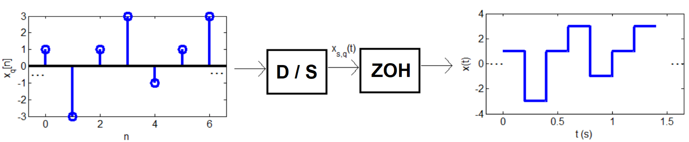
Figure 1.23 illustrates D/A assuming RECONSTRUCTION using ZOH, a digital signal with amplitudes from the set and s.
Both Figure 1.23 and Figure 1.20 illustrate ZOH reconstruction, but in Figure 1.23 the amplitudes of are limited to the given finite set (quantized amplitudes) used in .
One could denote the ZOH output in Figure 1.23 as to emphasize the amplitude is quantized, but most practical reconstruction schemes (other than ZOH) generate an analog signal with amplitudes not belonging to and it is more general to denote the output of a reconstruction stage as instead of .
Having all these concepts defined, Figure 1.24 illustrates a complete processing chain of an input analog signal that generates the output . The core of the processing is the digital signal processing (DSP) block, which can implement, for instance, a digital filter. The sampling frequency is used by both A/D and D/A processes. Note that the sampled signals and do not actually exist within ADC or DAC chips, but are useful abstract models for the S/D and D/S processes.
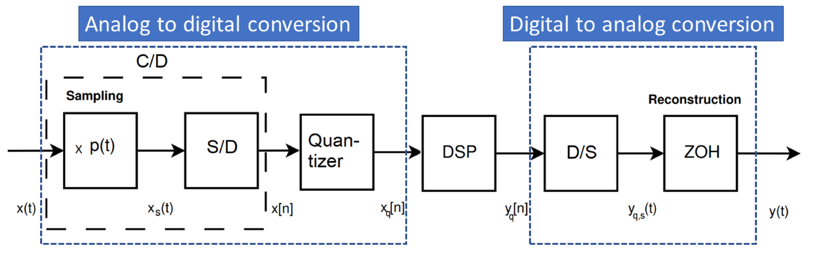
1.6.10 Sampling theorem
The sampling theorem specifies the minimum value that must assume in order to be able to perfectly reconstruct from or the respective . It is stated here without proof, which is deferred to Chapter 3.
Theorem 1. Sampling theorem. Assuming the maximum frequency of a real-valued signal is , the sampling frequency must obey
|
|
(1.16) |
in order to guarantee the perfect reconstruction of from its sampled version or the corresponding . If is given in Hz, is the number of real-valued samples per second, also given in Hz (alternatively, it can be denoted in samples per second, or SPS).
Sampling is so important that it will be further discussed later with the help of Fourier transforms in Section 3.5. But before delving into a more rigorous mathematical description of sampling, it is useful to understand the expression of a periodic impulse train
where is the sampling interval and . The expression for and the sifting property of the impulse allows to model the sampled signal as
|
|
(1.17) |
The S/D stage can then convert into , which represents .
In Eq. (1.16), perfect reconstruction means that given the sample values, specified as or , it is possible to recover the original . But in this case, the reconstruction process is not as simple as the ZOH in Figure 1.23. The ideal (“perfect”) reconstruction adopts the infinite-duration sinc function as discussed in Section 1.6.7.0. More specifically, is obtained from Eq. (1.14) as the following combination of scaled and shifted versions of
:|
|
(1.18) |
A continuous-time signal with infinite duration often requires an infinite number of samples to be fully represented. This can be seen by sampling an eternal sinusoidal signal according to the sampling theorem. For instance, has angular frequency rad/s and frequency 10 Hz. Assuming C/D conversion with Hz, leads to , which corresponds to repeating the amplitude values from to . Hence, the original signal can be perfectly reconstructed from using Eq. (1.18). In this case, the infinite number of sinc parcels in Eq. (1.18) would properly add to perfectly compose the original signal .
The following example aims at providing a more concrete description of reconstructing a sinusoid. Instead of trying to use an eternal sinusoid and infinite sinc parcels, an approximation is used for a specific time interval.
Example 1.17. Example of cosine reconstruction from few samples. This examples adopts oversampling (see Section 1.6.2) to generate a high-resolution discrete-time signal that resembles the original analog signal. Listing 1.8 describes all preparation steps for invoking the function ak_sinc_reconstruction.m.
%% Define variables max_n = 8; %n varies from -max_n to max_n Ts=0.2; %sampling interval (in seconds) A=4; %cosine amplitude, in Volts 5Fs=1/Ts; %sampling frequency (5 Hz) fc=Fs/4; %cosine frequency (1.25 Hz) oversampling_factor = 200; %oversampling factor textra = 1; %one extra time (1 second) for visualizing sincs %% Generate signal xn sampled at Fs 10n=-max_n:max_n; %original discrete-time axis as integers t=(-max_n:max_n)*Ts; %original sampled time axis in seconds xn=A*cos(2*pi*fc*t); %cosine sampled at Fs %% Generate oversampled version of xn oversampled_Ts = Ts/oversampling_factor; %new value of Ts 15oversampled_n = n(1)*oversampling_factor:n(end)*oversampling_factor; oversampled_t = oversampled_n*oversampled_Ts; %time in seconds oversampled_xn=A*cos(2*pi*fc*oversampled_t); %oversampled cosine %% Reconstruct signal from samples stored at xn and compare with %% the "ground truth" oversampled_xn 20ak_sinc_reconstruction(n,xn,Ts,oversampled_n,oversampled_xn,textra);
The low-resolution signal , or xn in Listing 1.8, represents a segment with only 17 samples obtained by sampling a segment from to 1.6 s of the original signal , with Volts and Hz. Because Hz is larger than Hz, the sampling theorem is obeyed and a perfect reconstruction is possible.

The signal oversampled_xn plays the role of the analog signal within a computer, using a relatively large oversampling factor of 200. This signal is shown in the top plot of Figure 1.25. The second plot from the top is depicting the sampled signal , while the third shows the discrete-time signal .
The signal oversampled_xn is passed as an input argument to function ak_sinc_reconstruction.m such that it can be compared to the reconstructed signal created within this function, as depicted in the bottom plot of Figure 1.25. The two plots (“original” and “reconstructed”) overlap almost perfectly. But closely observing the bottom plot in Figure 1.25 shows that the reconstruction is better in the time instants closer to the center than in the endpoints s. The reason for that can be understood by interpreting Figure 1.26 and Figure 1.27.
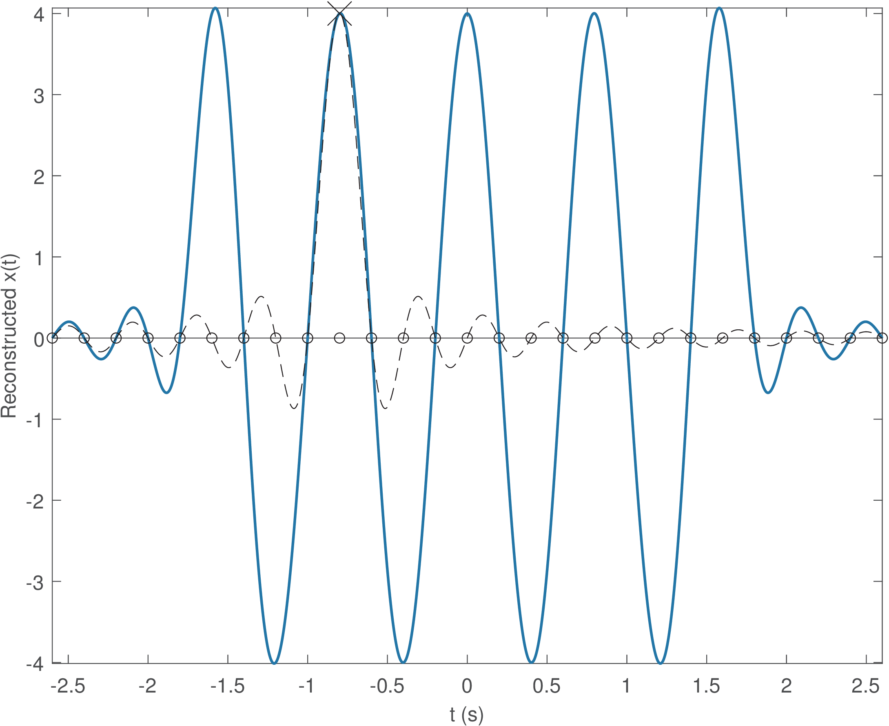
Figure 1.26 depicts a single sinc while Figure 1.27 shows all sinc parcels. Figure 1.26 shows the sinc centered at s (or ) and the reconstructed signal, obtained by using all sinc parcels.
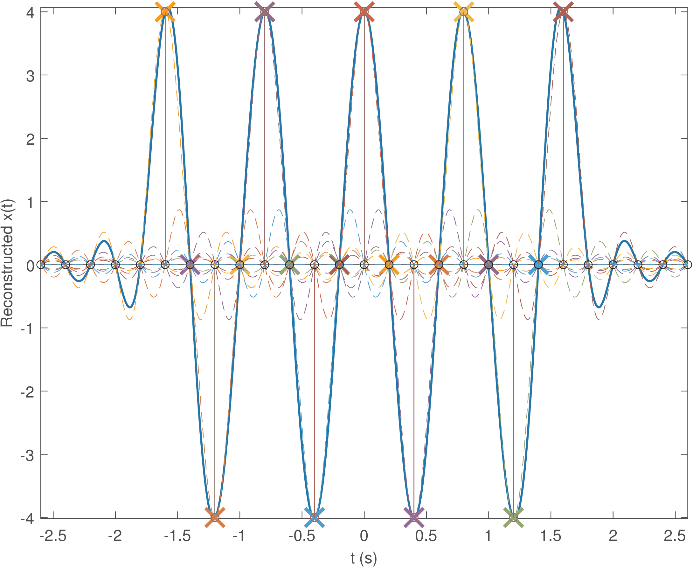
Because it has several superimposed curves, the reader is invited to obtain Figure 1.27 by executing ak_sinc_reconstruction.m iteratively, step-by-step, to see each individual sinc being plotted. Figure 1.27 can only depict the final result, with all sincs superimposed. Basically, this figure shows that the scripts was created such that only nine sincs effectively contribute to reconstructing the cosine, given that six samples of have amplitude equals zero. The reconstruction at the endpoints is impaired because the infinite number of sincs in Eq. (1.18) are not used by the script. The missing sincs at the left () and right () extrema have more impact at the endpoints than at .
Example 1.18. Reconstruction of a signal composed by sincs. This example further investigates the reconstruction of the signal described by Eq. (1.15), which is repeated below for convenience:
The signal is composed by three parcels of the sinc
Finding the frequencies that compose a signal is the topic of Chapter 2, but it can be anticipated here that the maximum frequency8 of is bounded by Hz. Shifting to and , and then adding these three parcels to obtain Eq. (1.15), does not increase the maximum frequency. Hence, the bound Hz also holds for the signal .
In the case of Hz, the sampling theorem states that Hz guarantees perfect reconstruction. Listing 1.9 adopted s, which corresponds to Hz, which also obeys the theorem.
%% Define variables Ts=0.1; %sampling interval (in seconds) Fs=1/Ts; %sampling frequency (5 Hz) oversampling_factor = 200; %oversampling factor 5textra = 0.5; %one extra time (2 seconds) for visualizing sincs sinc_support = 0.2; %support of the sinc in seconds n=-8:12; %segment of samples of interest %% Generate signal xn sampled at Fs t=n*Ts; %discrete-time axis in seconds 10xn = sinc(t/sinc_support) - 3*sinc((t-0.2)/sinc_support) + ... 3*sinc((t-0.4)/sinc_support); %define the sampled signal %% Generate oversampled version of xn oversampled_Ts = Ts/oversampling_factor; %new value of Ts oversampled_n = n(1)*oversampling_factor:n(end)*oversampling_factor; 15oversampled_t = oversampled_n*oversampled_Ts; %time in seconds oversampled_xn = sinc(oversampled_t/sinc_support) - ... 3*sinc((oversampled_t-0.2)/sinc_support) + ... 3*sinc((oversampled_t-0.4)/sinc_support); %oversampled signal %% Reconstruct signal from samples stored at xn and compare with 20%% the "ground truth" oversampled_xn ak_sinc_reconstruction(n,xn,Ts,oversampled_n,oversampled_xn,textra);
Figure 1.28 (bottom plot) illustrates good reconstruction, even when using a segment of limited duration (from to 1.2 s).
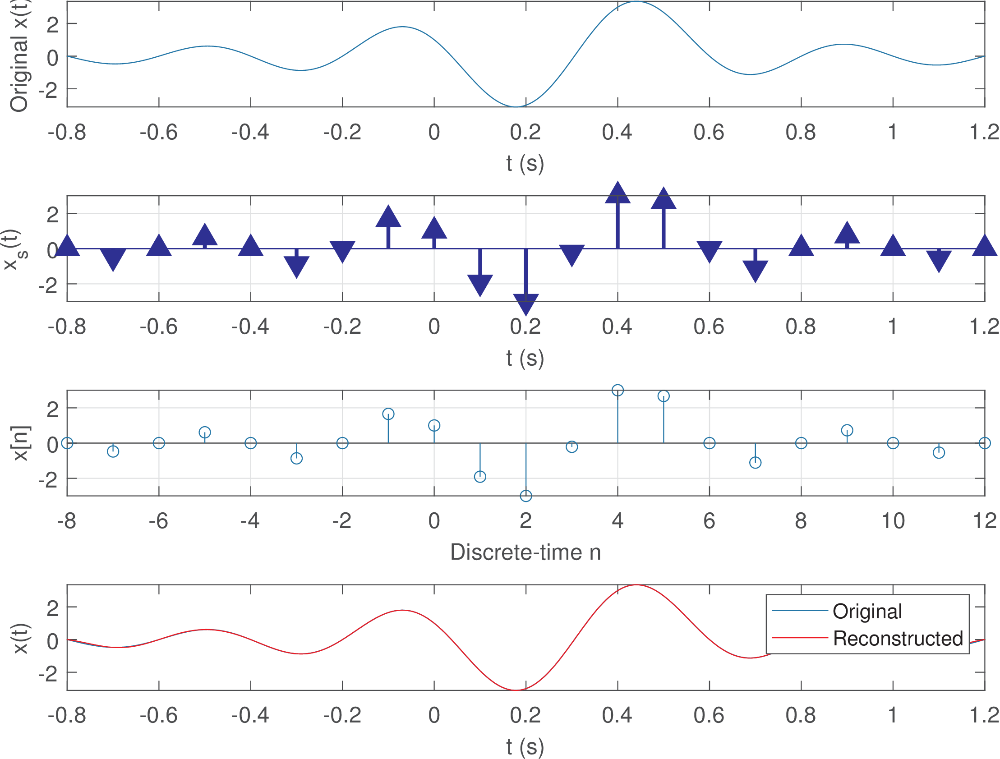
Figure 1.29 is similar to Figure 1.27 and shows the sinc parcels used to reconstruct the signal in Figure 1.28.
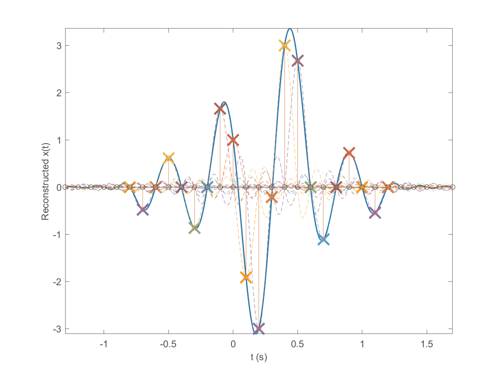
Both Figure 1.28 and Figure 1.21 are derived using the same signal , but using and 0.2, respectively. It can be seen from Figure 1.21 that s has, in this case, the property of representing with only three non-zero samples. The reason to have only three non-zero samples is that the impulses in the train used for sampling, coincide with having an amplitude of zero, with the exception of and 0.4 seconds, as depicted in Figure 1.22. However, if s is adopted, an infinite number of samples is required to represent .
Example 1.19. Failing to reconstruct signals when adopting . The sampling theorem is a strict inequality but some people state it as a non strict inequality, i. e., , which is incorrect.
One reason for considering is wrongly interpreting that of the signal described by Eq. (1.15) is Hz. Because in this case Hz works, it may lead to the incorrect assumption that always works. However, the signal of Eq. (1.15) has infinite frequency components, which extend from zero up to 2.5 Hz, but it does not have a discrete component at Hz. Hence, its Hz and Hz obeys the sampling theorem, and allows perfect reconstruction, as can be seen in Figure 1.21.
However, if a signal has a discrete component at , then choosing does not guarantee reconstruction. A simple example is to consider sampling the signals and using
Hz. Both signals have Hz, but the time delay created by the phase makes the sampling instants coincide with the zeros of . In this case, (and, consequently ) has amplitudes equal to zero, and reconstruction fails. This is indicated in Figure 1.30, created with the script snip_signals_failed_cosine_reconstruction.m. This script can be modified to show that can be eventually reconstructed, but it is not guaranteed. In summary, one must use to guarantee perfect reconstruction.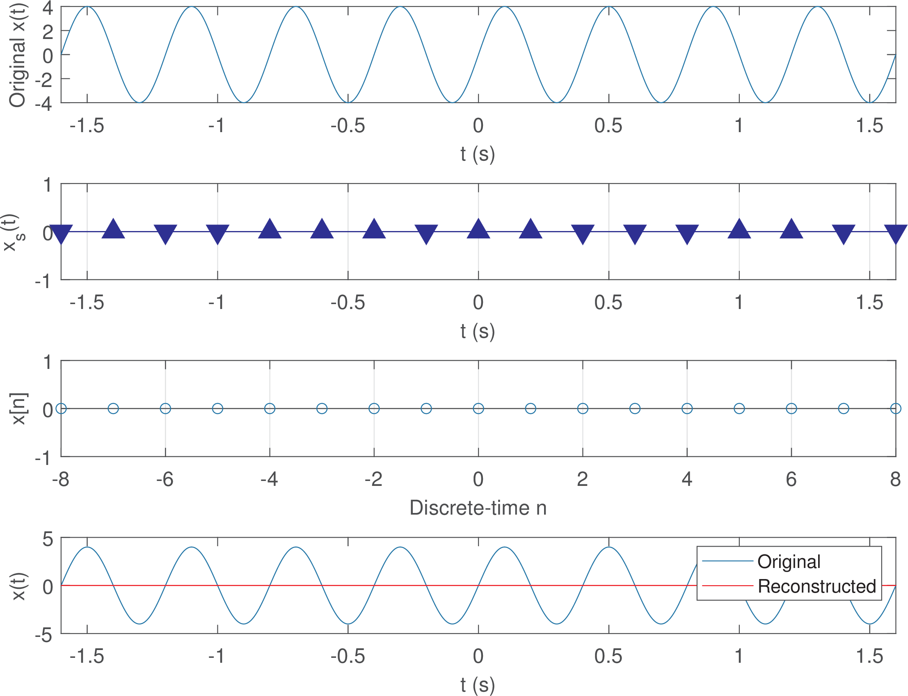
As another example, assume a cosine
|
|
(1.19) |
where . The sampling frequency is (wrongly) chosen as such that and cannot be recovered from (which is the same for any phase ), as illustrated by Listing 1.10.
Fs=20; Ts=1/Fs; %sampling frequency Fs in Hz and period Ts in sec. f0=Fs/2; %key thing: Fs should be greater than 2 f0 t=0:Ts:1; %discrete-time axis, from 0 to 1 second theta1=pi/4 %define an arbitrary angle 5A1=1/cos(theta1); %amplitude x1=A1*cos(2*pi*f0*t+theta1); %not obeying sampling theorem theta2=0 %define any value distinct from theta1 A2=1/cos(theta2); %amplitude x2=A2*cos(2*pi*f0*t+theta2); %not obeying sampling theorem 10plot(t,x1,'rx',t,x2,'o-b'); title('Cannot distinguish 2 signals!')
This ambiguity and the previous example demonstrate the need for a strict inequality when interpreting the sampling theorem.
Example 1.20. Trying to prove that the sampling theorem is wrong! A very astute student compared Figure 1.11 and Figure 1.21, and observed that two distinct signals could have generated the samples in . Hence, she concluded that the sampling theorem was wrong, given that from the samples , one would not be able to distinguish if the original signal corresponds to Eq. (1.7) or Eq. (1.15).
Her main mistake was not to check the maximum frequencies of the signals given by Eq. (1.7) or Eq. (1.15). Finding the frequencies that compose a signal is the topic of
Chapter 2, but it can be anticipated here that the maximum frequency of Eq. (1.15) is Hz (from Eq. (B.55)) while the signal corresponding to Eq. (1.7) has an infinite maximum frequency (from Eq. (B.54)) and its conversion to did not obey the sampling theorem!Listing 1.11 illustrates what happens when one starts with Eq. (1.7), samples this signal (but not obeying the sampling theorem) and then tries to recover Eq. (1.7) using sinc interpolation. The generated Figure 1.31 shows that reconstruction fails miserably.
%% Define variables Ts=0.2; %sampling interval (in seconds) Fs=1/Ts; %sampling frequency (5 Hz) oversampling_factor = 200; %oversampling factor 5textra = 1; %one extra time (1 second) for visualizing sincs pulse_width = 0.2; %support of the rects in seconds %% Generate signal xn sampled at Fs n=-3:3; xn=[0 0 0 1 -3 3 0]; %signal with only three non-zero samples 10%% Generate oversampled version of xn oversampled_Ts = Ts/oversampling_factor; %new value of Ts oversampled_n = n(1)*oversampling_factor:n(end)*oversampling_factor; oversampled_t = oversampled_n*oversampled_Ts; %time in seconds oversampled_xn = rectpuls(oversampled_t,pulse_width) - ... 15 3*rectpuls(oversampled_t-Ts,pulse_width) + ... 3*rectpuls(oversampled_t-2*Ts,pulse_width); %define the signal %% Reconstruct signal from samples stored at xn and compare with %% the "ground truth" oversampled_xn ak_sinc_reconstruction(n,xn,Ts,oversampled_n,oversampled_xn,textra);
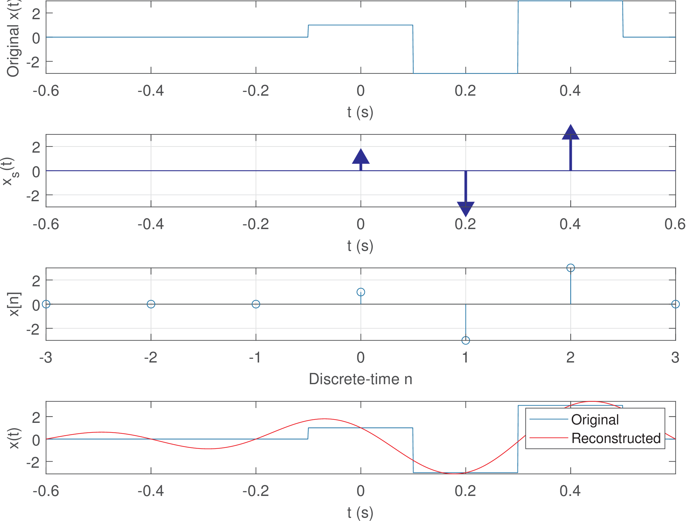
Figure 1.32 is similar to Figure 1.27 and shows the sinc parcels used to reconstruct the signal.
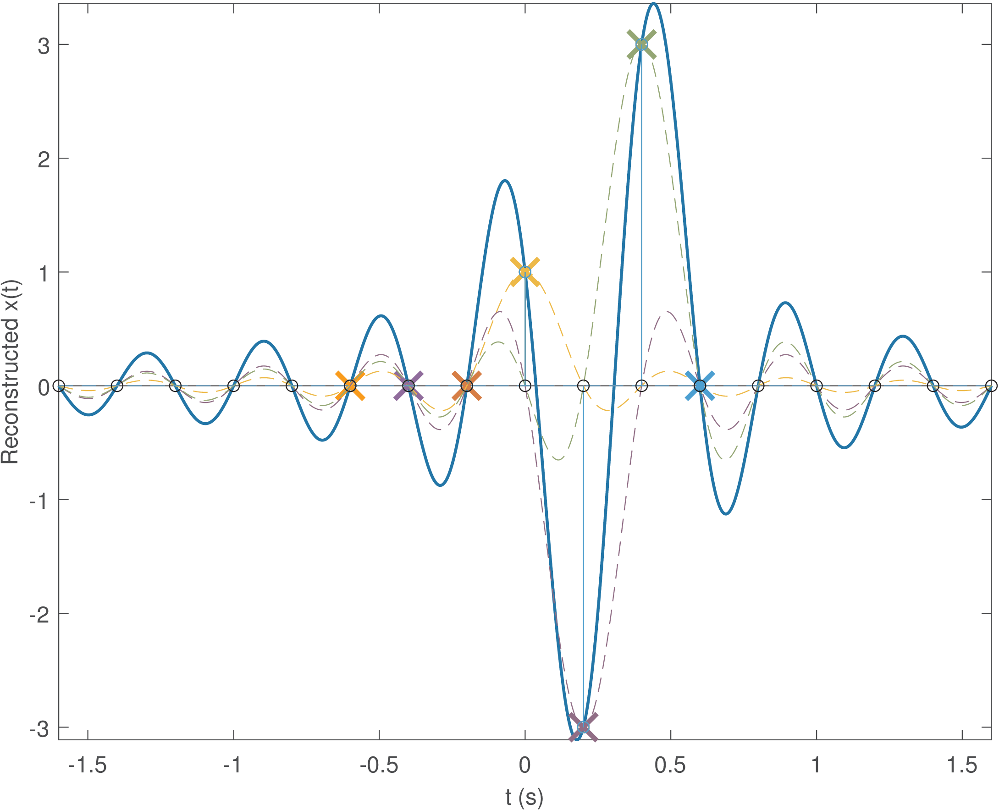
The main message of this example is the proper interpretation of the sampling theorem: there is a unique continuous-time signal that has and is represented by a given sampled signal , or equivalently, . In this specific case, Eq. (1.15) is the only signal that can lead to .
The perfect reconstruction guaranteed by the sampling theorem, Eq. (1.16), assumes the use of the ideal sinc interpolation of Eq. (1.18), which is not realizable in practice. Hence, is chosen to be typically or even larger to alleviate the errors imposed by a non ideal reconstruction. The sampling frequencies adopted for some common signals9 are shown in Table 1.3.
| Signal |
Explanation for |
||
| Telephone speech | 3400 Hz |
Band [300, 3400] Hz suffices for intelligibility |
8 kHz |
| Audio (CD format) | 20 kHz |
Humans can hear up to 20 kHz |
44.1 kHz |
| Electrocardiogram (ECG) | Hz |
Clinical studies |
500 Hz |
In special cases, when is complex-valued or a “passband” signal (Section 3.5.5), a lower value of can be adopted and still allow perfect reconstruction.
1.6.11 Different notations for S/D conversion
It is convenient to have two different notations for the S/D conversion: a simpler one and an alternative that better represents cases in which the amplitude of depends on the sampling interval . We start their discussion with an example.
Example 1.21. Example of S/D conversion of a signal . Assume the continuous-time signal should be sampled with a period to create , which is then transformed into a discrete-time signal via the S/D operation. The notation will denote the S/D process, which in this case leads to:
The last step in Eq. (1.20) is based on the fact that .
When writing signal expressions, the sampling operation is eventually not made explicit. An alternative notation is discussed in the following example.
Example 1.22. Simplified notation for the S/D conversion of a signal . This example discusses a simplified notation for the S/D conversion that is sometimes adopted in the literature.
Assume the continuous-time signal should be transformed to a discrete-time with a sampling period . This conversion is often denoted as:
|
|
(1.21) |
which can be confusing. One could write and, comparing to Eq. (1.21), complain that the samples of the continuous-time step function became ( was “substituted” by ), while remained (was not substituted by ) in the exponential .
The reason to be careful with the simplified notation is that, when performing a S/D conversion, the occurrences of as part of the independent variable (the argument of , within ) are converted to , as depicted in Figure 1.18. However, the factor remains when it influences the amplitude (dependent variable).
Hence, the notation for the S/D process in Eq. (1.21) is somehow incomplete. It does not rely on impulses and, consequently, it does not make explicit the intermediate step of creating a sampled signal . However, because the notation is cumbersome, the reader should be also familiar with the widely adopted alternative of Eq. (1.21).
7 Eq. (1.13) represents the convolution between and . Convolution will be discussed in Section 3.4.1 and allows to be interpreted as the impulse response of a filter used for reconstruction.
8 This value is obtained from Eq. (B.55) with Hz, and observing that the spectrum of extends up to 2.5 Hz but does not have an impulse at this frequency, indicating that there is no frequency component at 2.5 Hz, and Hz.
9 ECG is discussed, for example, at [url1ecg].
</div>